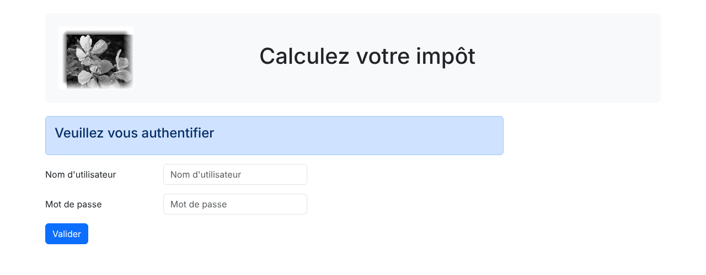

24. Exercice d'application – version 13
La version 13 amène peu de changements : elle sécurise l'accès aux fichiers de l'application. Elle n'ajoute aucune fonctionnalité : les actions, les réponses JSON, XML et HTML et les vues sont celles de la version 12. C'est l'organisation des fichiers sur le disque et la configuration du serveur [Apache] qui changent.
24.1. Le problème
Dans le cours PHP 7, on pouvait demander l'URL du fichier de configuration de la version 12 et le navigateur l'affichait. Or ce fichier [config.json] contient des informations sensibles, tels les identifiants des utilisateurs autorisés à utiliser l'application. Il ne faut pas qu'il soit accessible aux utilisateurs.
Dans notre version 12, ce fichier est déjà protégé : il est dans le dossier [Data], dont le fichier [.htaccess], présenté avec la version 8, interdit l'accès (directive [Require all denied]). Mais cette protection est une protection au cas par cas : on interdit ce que l'on a pensé à interdire, et tout le reste est servi. Or il reste beaucoup de choses à ne pas montrer. Par exemple, le navigateur peut demander directement une vue, sans passer par le contrôleur principal :
La vue est exécutée hors de son contexte : les variables que lui fournit normalement la classe [HtmlResponse] n'existent pas. Comme [Laragon] est configuré pour le développement (directive [display_errors=On] de PHP), les messages d'erreur sont envoyés au navigateur. Ils révèlent le chemin des fichiers sur le serveur, le nom des fonctions et des classes utilisées : autant d'informations utiles à qui voudrait attaquer l'application. Les contrôleurs secondaires, les classes des réponses, les classes des couches [métier] et [dao] peuvent de même être exécutés par une simple URL. Ici, ils ne font que définir une classe, mais rien ne garantit qu'il en sera toujours ainsi.
Plus grave : c'est tout le dossier [php8-oct-2026] du cours qui est dans le dossier [www] de [Laragon]. Les fichiers des scripts console sont eux aussi accessibles par le web, alors que personne n'a pensé à les protéger :
N'importe qui peut lire l'identifiant et le mot de passe de l'utilisateur de la base de données [dbimpots-2019]. Or les versions 8 à 12 du serveur utilisent ce fichier ou son équivalent.
La bonne démarche est inverse : tout interdire, puis autoriser explicitement ce qui doit être accessible de l'extérieur. Pour notre application, seuls trois fichiers doivent l'être :
- [main.php], le contrôleur principal, qui reçoit toutes les requêtes ;
- [index.php], le point d'entrée de l'application HTML, qui redirige vers [main.php] ;
- l'image [logo.jpg], que le navigateur demande par une requête HTTP lorsqu'il affiche le bandeau des vues .
24.2. La nouvelle arborescence
Nous faisons un copier-coller du dossier [scripts-web/impots/version-12] dans [scripts-web/impots/version-13] puis nous réorganisons ses fichiers :
- en [public], le seul dossier qui sera accessible par le web. Il contient les deux scripts [index.php, main.php] et, dans le dossier [Resources], l'image [logo.jpg]. Le nom [public] est celui qu'utilisent les frameworks PHP actuels (Symfony, Laravel) pour ce même rôle ;
- en [Config], les fichiers de configuration : [config.json] (l'ancien [Data/config.json]) et [database.json], la configuration de la base de données qui était prise dans le dossier [Data] de la version 8. Le fichier [vhost-impots-v13.conf] sera présenté à la fin du chapitre ;
- en [Logs], le fichier des logs, qui était dans le dossier [Data] ;
- en [Model], les classes des couches [métier] et [dao] du serveur. Jusqu'ici, elles étaient chargées à partir des dossiers des versions 8 et 9. Elles sont maintenant recopiées dans le dossier de la version 13, de même que les entités [ExceptionImpots, TaxAdminData, Database] (version 5) et les utilitaires [Logger, SendAdminMail] (version 9), [XmlUtilitaires] (version 11) et [Utilitaires] (version 5). Le dossier [version-13] contient ainsi toute l'application : c'est lui seul que l'on copierait sur un serveur de production, sans dépendre des dossiers des autres versions ;
- le dossier [Tests] de la version 12, qui contenait les pages de test des vues, n'est pas repris : ces pages ne seraient de toute façon plus accessibles par le web .
Le nom de ces fichiers ne change pas, et leur contenu non plus, à trois exceptions près que nous présentons maintenant. Seule la bibliothèque de Composer [vendor] reste à sa place, à la racine du dossier [php8-oct-2026].
24.3. Les modifications du code
24.3.1. Le fichier de configuration
Le fichier [Config/config.json] devient le suivant :
- ligne 2 : le fichier de configuration de la base de données est maintenant dans le dossier [Config] de l'application ;
- lignes 3-33 : tous les fichiers de l'application sont pris dans les dossiers de la version 13. Les chemins sont relatifs au dossier racine de l'application, le dossier [version-13] ;
- ligne 49 : le fichier des logs est dans le dossier [Logs] .
24.3.2. Le contrôleur principal [public/main.php]
Le contrôleur principal est déplacé dans le dossier [public]. Seules deux lignes changent :
- ligne 18 : la constante [ROOT_DIRECTORY] désigne toujours le dossier racine de l'application, auquel sont relatifs les chemins du fichier [config.json]. Le script étant maintenant dans le dossier [public], ce dossier racine est le dossier parent de [__DIR__]. On ne peut pas écrire [dirname(__DIR__)] : la valeur d'une constante déclarée avec [const] doit être une expression constante, et l'appel d'une fonction n'en est pas une. La concaténation de [__DIR__] (une constante) et d'une chaîne en est une ;
- ligne 20 : le nouveau chemin du fichier de configuration ;
- ligne 23 : cette ligne ne change pas : le chemin du chargeur de Composer est relatif au dossier racine de l'application, qui est toujours [scripts-web/impots/version-13] .
Le script [public/index.php] est celui de la version 12. Sa redirection vers l'URL relative [main.php?action=init-session&type=html] reste correcte puisque [index.php] et [main.php] sont dans le même dossier.
24.3.3. Le bandeau des vues
Les vues restent dans le dossier [Views], hors du dossier [public] : elles sont incluses par la classe [HtmlResponse] avec un chemin du disque ([__DIR__ . "/../Views/$vue"]), et non demandées par le navigateur. Seul le fragment [v-bandeau.php] change, car le logo a changé de place :
- ligne 9 : l'URL du logo est relative à l'URL de la page affichée, qui est toujours celle du contrôleur principal [.../version-13/public/main.php]. Le navigateur demandera donc l'URL [.../version-13/public/Resources/logo.jpg] .
24.4. Le fichier [.htaccess] de l'application
Avec [Laragon], la racine des documents du serveur [Apache] (directive [DocumentRoot]) est le dossier [www]. Tout ce qui est sous [www] peut donc être demandé par une URL, et en particulier tout le dossier [version-13]. Pour interdire l'accès à tout ce qui n'est pas dans le dossier [public], nous utilisons un unique fichier [.htaccess], placé à la racine de l'application, dans le dossier [version-13]. Rappelons que les directives d'un fichier [.htaccess] s'appliquent au dossier qui le contient et à tous ses sous-dossiers. [Laragon] configure [Apache] pour qu'il lise ces fichiers (directive [AllowOverride All]) :
Commentaires
- ligne 5 : lorsqu'une URL désigne un dossier qui n'a pas de document par défaut ([index.php], [index.html]), [Apache] peut afficher la liste des fichiers du dossier. La directive [Options -Indexes] le lui interdit ;
- ligne 8 : nous utilisons le module [mod_rewrite] d'[Apache], le module de réécriture des URL, actif par défaut dans [Laragon]. Une règle [RewriteRule] a la forme [RewriteRule motif substitution [options]]. Dans un fichier [.htaccess], le motif, une expression régulière, est comparé au chemin de l'URL demandée relatif au dossier du fichier [.htaccess]. Pour l'URL [http://localhost/php8-oct-2026/scripts-web/impots/version-13/Config/config.json], ce chemin est [Config/config.json] ;
- lignes 11-12 : la 1re règle traite l'URL du dossier de l'application [.../version-13/], dont le chemin relatif est vide (motif [^$]). Elle redirige le navigateur (option [R=302]) vers le dossier [public] et arrête le traitement des règles (option [L], pour « last »). La substitution doit être un chemin d'URL complet : on l'obtient à partir de la variable [REQUEST_URI] d'[Apache], le chemin de l'URL demandée [/php8-oct-2026/scripts-web/impots/version-13/]. La condition [RewriteCond] qui précède la règle compare cette variable à l'expression régulière [^(.*)/$] : la partie entre parenthèses, le chemin sans le / final, est alors disponible dans la règle sous le nom [%1]. Ainsi, le fichier [.htaccess] ne dépend pas de l'emplacement de l'application dans le dossier [www] ;
- ligne 14 : la 2e règle s'applique à toute URL dont le chemin relatif ne commence pas par [public/] et n'est pas exactement [public] : c'est le sens du [!] placé devant le motif. La substitution [-] signifie « pas de substitution » et l'option [F] (pour « forbidden ») fait répondre [Apache] par le code [403 Forbidden]. L'URL [.../version-13/public], sans le / final, doit rester autorisée : [Apache] (module [mod_dir]) y répond par une redirection vers [.../version-13/public/] .
Ce fichier interdit aussi l'accès à lui-même : il n'est pas dans le dossier [public]. Comme le chemin d'une URL est normalisé par [Apache] avant l'application des règles, une URL comme [.../version-13/public/../Config/config.json] est elle aussi refusée.
Le cours PHP 7 plaçait dans chacun des dossiers à protéger un fichier [.htaccess] contenant les deux lignes [order deny,allow] et [deny from all]. C'est la syntaxe d'[Apache] 2.2. [Apache] 2.4 ne l'accepte plus que grâce au module de compatibilité [mod_access_compat], destiné à disparaître. La syntaxe d'[Apache] 2.4 est [Require all denied], que nous utilisons depuis la version 8.
Si l'on ne veut pas utiliser le module [mod_rewrite], une variante possible utilise deux fichiers [.htaccess] et la syntaxe [Require] :
- dans le dossier [version-13], un fichier [.htaccess] contenant la seule ligne [Require all denied] : tout est interdit ;
- dans le dossier [public], un fichier [.htaccess] contenant la seule ligne [Require all granted] : les directives d'autorisation d'un sous-dossier remplacent celles du dossier parent, et tout le contenu de [public] est autorisé .
Cette variante fonctionne aussi, mais l'URL [.../version-13/] est alors refusée au lieu d'être redirigée vers le dossier [public].
24.4.1. Tests [curl]
Les fichiers de l'application, hors du dossier [public], sont refusés :
Le code [403 Forbidden] est celui de la 2e règle. On remarquera que la vue [vue-calcul-impot.php] n'a même pas été exécutée. Les fichiers du dossier [public] sont servis :
- lignes 1-11 : le contrôleur principal répond normalement : la session JSON est démarrée ;
- lignes 13-20 : le logo est servi (type [image/jpeg]) .
Enfin, l'URL de l'application est redirigée vers le dossier [public], dont le script [index.php] redirige à son tour vers le contrôleur principal :
- ligne 4 : la redirection de la 1re règle du fichier [.htaccess] ;
- ligne 11 : la redirection du script [public/index.php] .
Dans un navigateur, l'URL de démarrage de l'application HTML devient [http://localhost/php8-oct-2026/scripts-web/impots/version-13/]. Après les deux redirections, on obtient la vue d'authentification, avec son logo :

L'application fonctionne comme celle de la version 12. Voici la vue du calcul de l'impôt après une simulation :

Les URL des requêtes des clients JSON et XML changent : le contrôleur principal est maintenant [.../version-13/public/main.php]. Pour utiliser le client JSON de la version 12 avec le serveur de la version 13, il suffit de changer la clé [urlServer] de son fichier de configuration.
24.5. En production : la racine des documents est le dossier [public]
Le fichier [.htaccess] est une solution adaptée à [Laragon], où un seul dossier, [www], contient de nombreuses applications. Sur un serveur de production, on procède autrement : on fait du dossier [public] la racine des documents du site. Le reste de l'application est alors hors de l'arborescence du site web : aucune URL ne peut l'atteindre, et aucune règle n'est nécessaire. C'est l'organisation recommandée par les frameworks PHP.
Avec [Apache], on définit pour cela un hôte virtuel (« virtual host »), c.-à-d. un site web supplémentaire servi par le même serveur [Apache]. Le fichier [Config/vhost-impots-v13.conf] en donne un exemple :
- ligne 4 : [Apache] écoute aussi le port 8013. Un hôte virtuel peut être distingué des autres par son port, comme ici, ou par son nom ([impots.test] par exemple). Le port évite d'avoir à déclarer un nouveau nom de machine ;
- lignes 5-14 : la configuration de l'hôte virtuel qui répond aux requêtes reçues sur le port 8013 ;
- ligne 7 : la racine des documents de ce site est le dossier [public] de la version 13. L'URL [http://localhost:8013/main.php] désigne donc le fichier [public/main.php] ;
- lignes 8-13 : les droits d'accès au dossier [public]. [AllowOverride None] indique à [Apache] qu'il n'a pas à chercher de fichiers [.htaccess] : toute la configuration est ici, ce qui est aussi plus rapide .
Dans [Laragon], on place un tel fichier, en adaptant les chemins au dossier d'installation de [Laragon], dans le dossier [<laragon>/etc/apache2/sites-enabled], puis on redémarre [Apache] depuis la fenêtre de [Laragon] (boutons [Stop] puis [Start All]). On a alors :
- lignes 1-6 : l'URL du site est servie par le script [public/index.php] ;
- lignes 8-9 : le contrôleur principal répond normalement ;
- lignes 11-18 : le logo est servi ;
- lignes 20-23 : le fichier de configuration n'est plus refusé, il n'existe tout simplement pas pour le serveur web : la réponse est [404 Not Found]. Le fichier [.htaccess] du dossier [version-13] n'est pas lu, puisqu'il est hors de la racine des documents .
Dans les deux cas, [Laragon] avec le fichier [.htaccess] ou un hôte virtuel dont la racine est le dossier [public], le code de l'application est le même. C'est l'intérêt de la nouvelle arborescence : ce qui est public est rassemblé dans un unique dossier, et tout le reste est protégé par défaut.